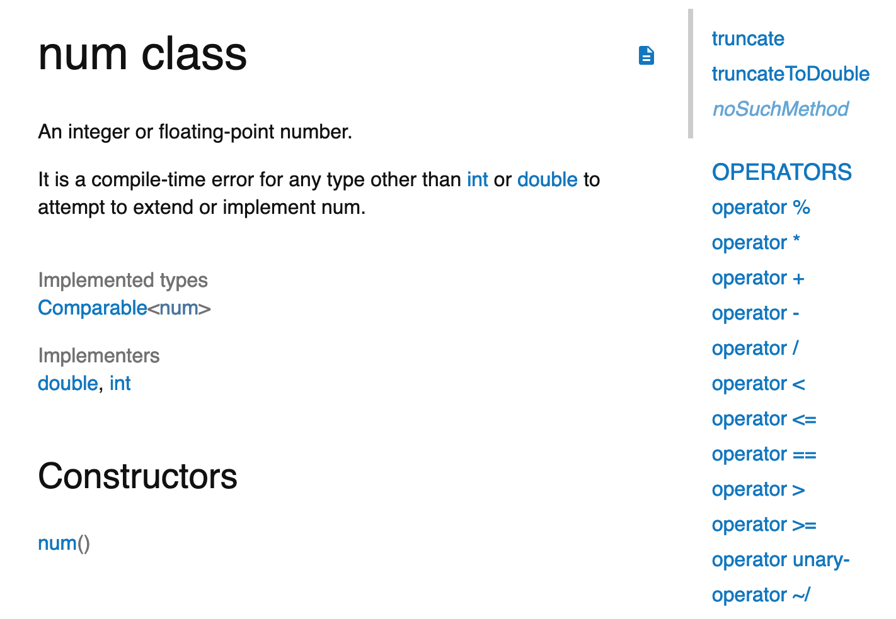

- 00 开篇词 为什么每一位大前端从业者都应该学习Flutter？.md.html
- 01 预习篇 · 从0开始搭建Flutter工程环境.md.html
- 02 预习篇 · Dart语言概览.md.html
- 03 深入理解跨平台方案的历史发展逻辑.md.html
- 04 Flutter区别于其他方案的关键技术是什么？.md.html
- 05 从标准模板入手，体会Flutter代码是如何运行在原生系统上的.md.html
- 06 基础语法与类型变量：Dart是如何表示信息的？.md.html
- 07 函数、类与运算符：Dart是如何处理信息的？.md.html
- 08 综合案例：掌握Dart核心特性.md.html
- 09 Widget，构建Flutter界面的基石.md.html
- 10 Widget中的State到底是什么？.md.html
- 11 提到生命周期，我们是在说什么？.md.html
- 12 经典控件（一）：文本、图片和按钮在Flutter中怎么用？.md.html
- 13 经典控件（二）：UITableView_ListView在Flutter中是什么？.md.html
- 14 经典布局：如何定义子控件在父容器中排版的位置？.md.html
- 15 组合与自绘，我该选用何种方式自定义Widget？.md.html
- 16 从夜间模式说起，如何定制不同风格的App主题？.md.html
- 17 依赖管理（一）：图片、配置和字体在Flutter中怎么用？.md.html
- 18 依赖管理（二）：第三方组件库在Flutter中要如何管理？.md.html
- 19 用户交互事件该如何响应？.md.html
- 20 关于跨组件传递数据，你只需要记住这三招.md.html
- 21 路由与导航，Flutter是这样实现页面切换的.md.html
- 22 如何构造炫酷的动画效果？.md.html
- 23 单线程模型怎么保证UI运行流畅？.md.html
- 24 HTTP网络编程与JSON解析.md.html
- 25 本地存储与数据库的使用和优化.md.html
- 26 如何在Dart层兼容Android_iOS平台特定实现？（一）.md.html
- 27 如何在Dart层兼容Android_iOS平台特定实现？（二）.md.html
- 28 如何在原生应用中混编Flutter工程？.md.html
- 29 混合开发，该用何种方案管理导航栈？.md.html
- 30 为什么需要做状态管理，怎么做？.md.html
- 31 如何实现原生推送能力？.md.html
- 32 适配国际化，除了多语言我们还需要注意什么_.md.html
- 33 如何适配不同分辨率的手机屏幕？.md.html
- 34 如何理解Flutter的编译模式？.md.html
- 35 Hot Reload是怎么做到的？.md.html
- 36 如何通过工具链优化开发调试效率？.md.html
- 37 如何检测并优化Flutter App的整体性能表现？.md.html
- 38 如何通过自动化测试提高交付质量？.md.html
- 39 线上出现问题，该如何做好异常捕获与信息采集？.md.html
- 40 衡量Flutter App线上质量，我们需要关注这三个指标.md.html
- 41 组件化和平台化，该如何组织合理稳定的Flutter工程结构？.md.html
- 42 如何构建高效的Flutter App打包发布环境？.md.html
- 43 如何构建自己的Flutter混合开发框架（一）？.md.html
- 44 如何构建自己的Flutter混合开发框架（二）？.md.html
- 特别放送 温故而知新，与你说说专栏的那些思考题.md.html
- 结束语 勿畏难，勿轻略.md.html
- 捐赠
06 基础语法与类型变量：Dart是如何表示信息的？
你好，我是陈航。
在专栏的第2篇预习文章“Dart语言概览”中，我们简单地认识了Dart这门优秀的程序语言。那么，Dart与其他语言究竟有什么不同呢？在已有其他编程语言经验的基础上，我又如何快速上手呢？
今天，我们就从编程语言中最重要的组成部分，也就是基础语法与类型变量出发，一起来学习Dart吧。
Dart初体验
为了简单地体验一下Dart，我们打开浏览器，直接在repl.it 新建一个main.dart文件就可以了（当然，你也可以在电脑安装Dart SDK，体验最新的语法）。
下面是一个基本的hello world示例，我声明了一个带int参数的函数，并通过字符串内嵌表达式的方式把这个参数打印出来：
printInteger(int a) {
print('Hello world, this is $a.');
}
main() {
var number = 2019;
printInteger(number);
}
然后，在编辑器中点击“run”按钮，命令行就会输出：
Hello world, this is 2019.
和绝大多数编译型语言一样，Dart要求以main函数作为执行的入口。
在知道了如何简单地运行Dart代码后，我们再来看一下Dart的基本变量类型。
Dart的变量与类型
在Dart中，我们可以用var或者具体的类型来声明一个变量。当使用var定义变量时，表示类型是交由编译器推断决定的，当然你也可以用静态类型去定义变量，更清楚地跟编译器表达你的意图，这样编辑器和编译器就能使用这些静态类型，向你提供代码补全或编译警告的提示了。
在默认情况下，未初始化的变量的值都是null，因此我们不用担心无法判定一个传递过来的、未定义变量到底是undefined，还是烫烫烫而写一堆冗长的判断语句了。
Dart是类型安全的语言，并且所有类型都是对象类型，都继承自顶层类型Object，因此一切变量的值都是类的实例（即对象），甚至数字、布尔值、函数和null也都是继承自Object的对象。
Dart内置了一些基本类型，如 num、bool、String、List和Map，在不引入其他库的情况下可以使用它们去声明变量。下面，我将逐一和你介绍。
num、bool与String
作为编程语言中最常用的类型，num、bool、String这三种基本类型被我放到了一起来介绍。
Dart的数值类型num，只有两种子类：即64位int和符合IEEE 754标准的64位double。前者代表整数类型，而后者则是浮点数的抽象。在正常情况下，它们的精度与取值范围就足够满足我们的诉求了。
int x = 1;
int hex = 0xEEADBEEF;
double y = 1.1;
double exponents = 1.13e5;
int roundY = y.round();
除了常见的基本运算符，比如+、-、*、/，以及位运算符外，你还能使用继承自num的 abs()、round()等方法，来实现求绝对值、取整的功能。
实际上，你打开官方文档或查看源码，就会发现这些常见的运算符也是继承自num：

图1 num中的运算符
如果还有其他高级运算方法的需求num无法满足，你可以试用一下dart:math库。这个库提供了诸如三角函数、指数、对数、平方根等高级函数。
为了表示布尔值，Dart使用了一种名为bool的类型。在Dart里，只有两个对象具有bool类型：true和false，它们都是编译时常量。
Dart是类型安全的，因此我们不能使用if(nonbooleanValue) 或assert(nonbooleanValue)之类的在JavaScript可以正常工作的代码，而应该显式地检查值。
如下所示，检查变量是否为0，在Dart中需要显示地与0做比较：
// 检查是否为0.
var number = 0;
assert(number == 0);
// assert(number); 错误
Dart的String由UTF-16的字符串组成。和JavaScript一样，构造字符串字面量时既能使用单引号也能使用双引号，还能在字符串中嵌入变量或表达式：你可以使用 ${express} 把一个表达式的值放进字符串。而如果是一个标识符，你可以省略{}。
下面这段代码就是内嵌表达式的例子。我们把单词’cat’转成大写放入到变量s1的声明中：
var s = 'cat';
var s1 = 'this is a uppercased string: ${s.toUpperCase()}';
为了获得内嵌对象的字符串，Dart会调用对象的toString()方法。而常见字符串的拼接，Dart则通过内置运算符“+”实现。比如，下面这条语句会如你所愿声明一个值为’Hello World!‘的字符串：
var s2 = 'Hello' + ' ' + 'World!' ;
对于多行字符串的构建，你可以通过三个单引号或三个双引号的方式声明，这与Python是一致的：
var s3 = """This is a
multi-line string.""";
List与Map
其他编程语言中常见的数组和字典类型，在Dart中的对应实现是List和Map，统称为集合类型。它们的声明和使用很简单，和JavaScript中的用法类似。
接下来，我们一起看一段代码示例。
- 在代码示例的前半部分，我们声明并初始化了两个List变量，在第二个变量中添加了一个新的元素后，调用其迭代方法依次打印出其内部元素；
- 在代码示例的后半部分，我们声明并初始化了两个Map变量，在第二个变量中添加了两个键值对后，同样调用其迭代方法依次打印出其内部元素。
var arr1 = ["Tom", "Andy", "Jack"];
var arr2 = List.of([1,2,3]);
arr2.add(499);
arr2.forEach((v) => print('${v}'));
var map1 = {"name": "Tom", 'sex': 'male'};
var map2 = new Map();
map2['name'] = 'Tom';
map2['sex'] = 'male';
map2.forEach((k,v) => print('${k}: ${v}'));
容器里的元素也需要有类型，比如上述代码中arr2的类型是List
如果编译器自动推断的类型不符合预期，我们当然可以在声明时显式地把类型标记出来，不仅可以让代码提示更友好一些，更重要的是可以让静态分析器帮忙检查字面量中的错误，解除类型不匹配带来的安全隐患或是Bug。
以上述代码为例，如果往arr2集合中添加一个浮点数arr2.add(1.1)，尽管语义上合法，但编译器会提示类型不匹配，从而导致编译失败。
和Java语言类似，在初始化集合实例对象时，你可以为它的类型添加约束，也可以用于后续判断集合类型。
下面的这段代码，在增加了类型约束后，语义是不是更清晰了？
var arr1 = <String>['Tom', 'Andy', 'Jack'];
var arr2 = new List<int>.of([1,2,3]);
arr2.add(499);
arr2.forEach((v) => print('${v}'));
print(arr2 is List<int>); // true
var map1 = <String, String>{'name': 'Tom','sex': 'male',};
var map2 = new Map<String, String>();
map2['name'] = 'Tom';
map2['sex'] = 'male';
map2.forEach((k,v) => print('${k}: ${v}'));
print(map2 is Map<String, String>); // true
常量定义
如果你想定义不可变的变量，则需要在定义变量前加上final或const关键字：
- const，表示变量在编译期间即能确定的值；
- final则不太一样，用它定义的变量可以在运行时确定值，而一旦确定后就不可再变。
声明const常量与final常量的典型例子，如下所示：
final name = 'Andy';
const count = 3;
var x = 70;
var y = 30;
final z = x / y;
可以看到，const适用于定义编译常量（字面量固定值）的场景，而final适用于定义运行时常量的场景。
总结
通过上面的介绍，相信你已经对Dart的基本语法和类型系统有了一个初步的印象。这些初步的印象，有助于你理解Dart语言设计的基本思路，在已有编程语言经验的基础上快速上手。
而对于流程控制语法：如if-else、for、while、do-while、break/continue、switch-case、assert，由于与其他编程语言类似，在这里我就不做一一介绍了，更多的Dart语言特性需要你在后续的使用过程中慢慢学习。在我们使用Dart的过程中，官方文档是我们最重要的学习参考资料。
恭喜你！你现在已经迈出了Dart语言学习的第一步。接下来，我们简单回顾一下今天的内容，以便加深记忆与理解：
- 在Dart中，所有类型都是对象类型，都继承自顶层类型Object，因此一切变量都是对象，数字、布尔值、函数和null也概莫能外；
- 未初始化变量的值都是null；
- 为变量指定类型，这样编辑器和编译器都能更好地理解你的意图。
思考题
对于集合类型List和Map，如何让其内部元素支持多种类型（比如，int、double）呢？又如何在遍历集合时，判断究竟是何种类型呢？
欢迎你在评论区给我留言分享你的观点，我会在下一篇文章中等待你！感谢你的收听，也欢迎你把这篇文章分享给更多的朋友一起阅读。
© 2019 - 2023 Liangliang Lee. Powered by gin and hexo-theme-book.